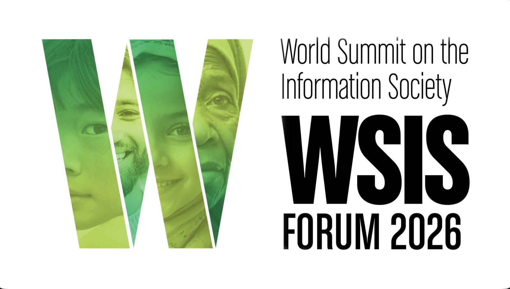
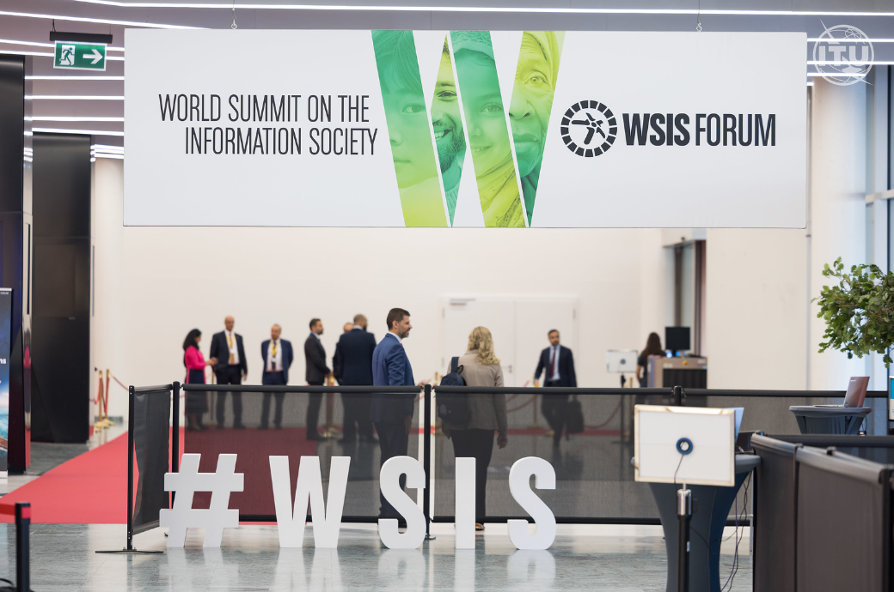
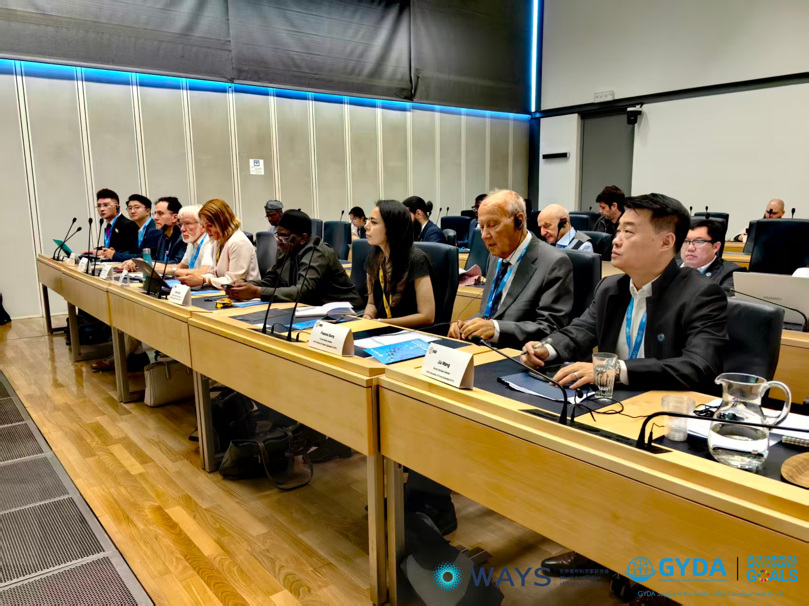
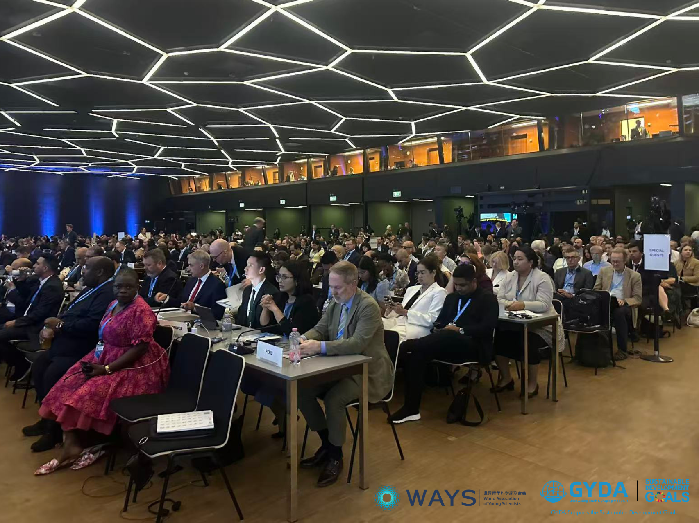

Global Youth AI Governance Consensus and Collaborative Initiatives Launched at WSIS Forum 2026

Location
Geneva, Switzerland
Date
July,2026
The World Summit on the Information Society (WSIS) Forum 2026, organized by the International Telecommunication Union (ITU), was held in Geneva. Session 530, titled "Scientists as Bridge Builders: Contributing Research to Global Digital Public Goods," was co-hosted by the World Association of Young Scientists (WAYS) and the Global Youth Development Alliance (GYDA). The session released the Global Youth AI Governance Consensus and launched four youth collaboration initiatives focused on young researchers’ participation in global digital governance.

WSIS Forum 2026 Brings Together UN Agencies and Youth Scientific Organizations
WSIS Forum 2026 is co-facilitated by United Nations agencies, including the ITU, the United Nations Educational, Scientific and Cultural Organization (UNESCO), the United Nations Development Programme (UNDP), and the United Nations Conference on Trade and Development (UNCTAD). Discussions at the forum covered AI safety, knowledge governance, and the future of work. The Council of Europe led sessions on AI safety, while the Office of the United Nations High Commissioner for Human Rights (OHCHR) examined knowledge governance with the Carr-Ryan Center at Harvard Kennedy School. The International Labour Organization (ILO) addressed AI and decent work. WAYS and GYDA participated in the forum as representatives of youth scientific organizations, contributing perspectives on youth participation in digital governance.
Five Core Principles of the Global Youth AI Governance Consensus
The session presented the Global Youth AI Governance Consensus, which outlines five core principles for digital public infrastructure.
The first principle focuses on multilateralism, stating that global digital governance and the provision of Digital Public Goods (DPGs) should be supported by existing multilateral frameworks. Francis Gurry, Former Director General of the World Intellectual Property Organization (WIPO) and Senior Advisor to GYDA, delivered an calling for open-source knowledge-sharing to reduce barriers to technological access.
The second principle focuses on youth inclusion, advocating for pathways for young scientists to participate in global technology governance and contribute to agenda-setting and standard-setting.
The third principle redefines DPGs by expanding their scope beyond traditional digital infrastructure to include data assets, talent pools, and indigenous knowledge, addressing the needs of emerging economies.
The fourth principle focuses on local adaptation. Mactar Seck, Head of the Innovation and Technology Section at the United Nations Economic Commission for Africa (UNECA), highlighted that global digital strategies must translate into customized, local solutions to avoid one-size-fits-all pitfalls, stressing that international regulations only yield public value when effectively adapted to regional realities.
The fifth principle, "AI as Ethics," centers on embedding ethical values into technological design. Christoph Stückelberger, Emeritus Professor of Ethics Honorary President of Globethics Network and GYDA Academic Committee Member, introduced the "Global South Ethics" framework, advocating for a culturally diverse approach to AI ethics. Sandra Maximiano, Chairwoman of the Board of Directors of Autoridade Nacional de Comunicações (ANACOM), shared national experiences in proactive regulation and regulatory sandbox models. François Grey, Associate Professor and Vice Dean at the Geneva School of Economics and Management (GSEM), University of Geneva, advocated for the implementation of a Citizen Science Credit System to incentivize public participation in digital public goods creation.

Four Joint Action Initiatives Announced
WAYS and GYDA launched four joint action initiatives during the forum. The Scholars Network will connect young researchers across countries to support international scientific collaboration. The DPG Conversion Mechanism supports the transformation of research outcomes into DPGs. The Youth in Standard-setting initiative promotes the participation of young scientists in technical standard-setting processes within organizations such as the ITU and the WIPO. The South-South Capacity Building initiative supports AI capacity building and knowledge sharing across the Global South. The session also introduced a Citizen Science Credit System to recognize and reward public participation in scientific research.

Eight Key Pillars and Collaborative Action Commitments
The deliberations of Session 530 focused on eight thematic pillars: Redefined DPGs, Inclusive AI Standard-setting, IP and Knowledge Balance, Culturally Inclusive AI Ethics, Youth Capacity Building, Proactive Regulation, Digital Empowerment, and Citizen Participatory Research. The consensus received support from international delegations. In addition to endorsing the consensus document, the organizing bodies established bilateral cooperation frameworks and exchange programs and announced the launch of the inaugural AI Social Impact Report.
Five Actionable Recommendations for Global Policymakers
The delegates of Session 530 proposed five recommendations for global policymakers on the future of digital governance.
First, the international community should balance open-source knowledge sharing with intellectual property protection to ensure that excessive restrictions do not limit access to essential digital tools.
Second, policymakers should develop adaptive and inclusive governance systems through transitional rules and proactive regulatory sandboxes that support local innovation.
Third, youth capacity building in developing economies should be strengthened through training programs, international fellowships, and shared case resources.
Fourth, permanent youth advisory bodies should be established within ITU and WIPO frameworks to strengthen youth participation in technology standard-setting.
Finally, global policies should promote human-machine collaboration, strengthen public digital literacy, and encourage human-in-the-loop oversight models that reflect different cultural and ethical contexts.

The conclusion of Session 530 at WSIS Forum 2026 highlighted the important role of young scientists in contributing to global digital governance discussions. Through multilateral cooperation and inclusive development, the initiative promotes the recognition of young researchers as active participants in digital governance processes.